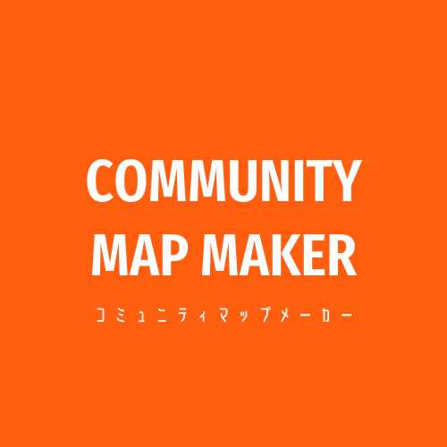

マイページ
公開用ユーザー ID
ログイン用パスワードを設定・変更する
ユーザー ID または確認済みのメールアドレスでログインするときに使います。
OpenStreetMap アカウント連携
OpenStreetMap の表示名は、編集者名として公開 API に表示されます。
参加プロジェクト
参加しているプロジェクトを確認し、参加を解除できます。参加解除後も、投稿済みのデータは残ります。
参加プロジェクトを読み込んでいます…
参加しているプロジェクトはありません。プロジェクト一覧を見る

コミュニティマップメーカーユーザー ID または確認済みのメールアドレスでログインするときに使います。
OpenStreetMap の表示名は、編集者名として公開 API に表示されます。
参加しているプロジェクトを確認し、参加を解除できます。参加解除後も、投稿済みのデータは残ります。
参加プロジェクトを読み込んでいます…
参加しているプロジェクトはありません。プロジェクト一覧を見る